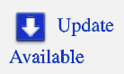

App Store Installs
Purchased add-ins are available to download from your My Downloads page when logged into the App Store.
Click on the following link and be sure to log in with the ID you used when the app was purchased.
select  on the app Save As SVG
Select the appropriate operating system (OS), either Mac OS or Win64, near the top of the page under the OS logo.
Select Download and run the install by double clicking on the file in the downloads folder.
When installing on Windows, see Windows Install
When installing on MacOS, see MacOS Install